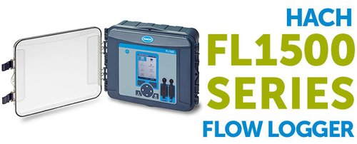
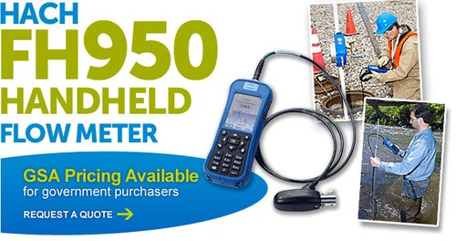
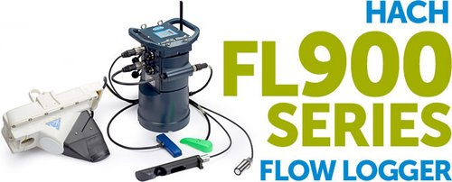
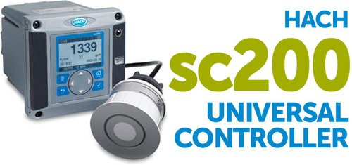
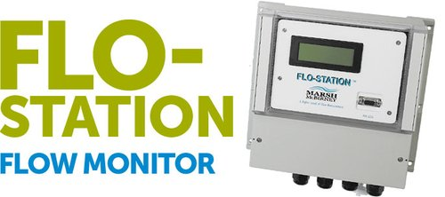
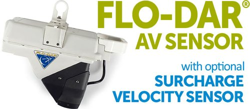
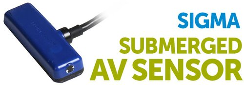
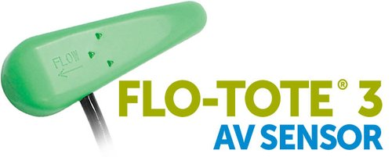
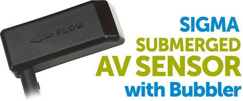
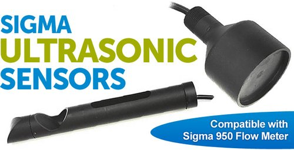

Open channel flow measurement
Hach Flow
Loggers and sensors from Hach, including the Sigma and Marsh-McBirney legacy lines.

Hach Flow, including its legacy brands Sigma and Marsh-McBirney, has a proven track record of industry-leading innovation and product accuracy in open channel flow measurement.
With true and timely flow data, you reduce risk and make critical wastewater flow decisions with confidence, managing your flow proactively rather than reacting to problems.
Hach meters are the link between collecting superior flow data and conveying it to you conveniently and reliably, with options for stationary, portable, permanent or temporary use. The sensor range runs from non-contact sensors that stay above the flow to limit fouling, to rugged submerged AV sensors.
Choosing a Hach system
Following Hach's own selection guide. Our team can help you match the system to the site.
Non-contactA flow logger with the Flo-Dar sensor: radar velocity and ultrasonic level from above the flow. Hach's most universal option, it limits fouling and avoids confined space entry after installation.
Submerged area velocityDoppler velocity and pressure level from a sensor in the flow, for a wide range of conditions. The Flo-Tote 3 suits very clean water and low velocities or levels.
Ultrasonic levelDown-looking sensors for flumes and weirs, and an in-pipe sensor that removes the ultrasonic deadband in near full pipes.
Redundant levelA submerged AV sensor with an in-pipe ultrasonic sensor, for billing and overflow monitoring.
Permanent powerThe Flo-Station with Flo-Dar, with four 4–20 mA outputs to SCADA, or a Sigma 950 with a submerged AV sensor.
Process control and spot checksThe SC200 controller with one or two ultrasonic sensors and a weir and flume library, and the FH950 handheld meter for spot checks and stream gauging.
Loggers5 products

FH950 Velocity Meter
Handheld meter for spot checks and stream gauging

FL900 Portable
Flow logger at the core of most Hach systems

SC200 Controller
Controller for ultrasonic level and process control

Flo-Station
Mains powered flow monitor for Flo-Dar
Sensors5 products

Flo-Dar
Non-contact radar velocity and ultrasonic level

Sub AV Sensor
Submerged Doppler velocity and pressure level

Flo-Tote 3
Submerged AV for clean water and low flows

AV Flow Sensor with Bubbler
Submerged AV with bubbler level

Ultrasonic Sensors
Non-contact level for flumes, weirs and pipes
Select any product for a closer look and to request pricing.
Ask us about Hach Flow.
Pricing, availability, hire and technical advice from the EDS team.